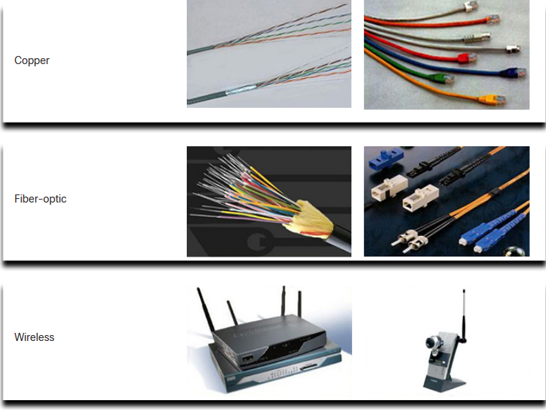
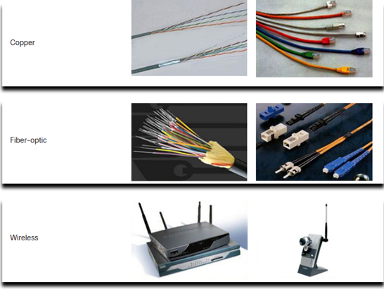

En la era digital actual, las redes de internet han evolucionado para convertirse en una parte esencial de nuestras vidas. Según estudios recientes, más del 60% de la población mundial tiene acceso a internet, lo que equivale a aproximadamente 4.9 mil millones de personas conectadas. Este número sigue creciendo a medida que las tecnologías de redes avanzan y se vuelven más accesibles en regiones remotas. Estos dispositivos abarcan desde electrodomésticos inteligentes hasta sensores industriales, todos interconectados a través de redes de internet robustas y seguras, la importancia y el impacto de las redes de internet en nuestra vida diaria.
Cada computadora en una red se llama host o dispositivo final. Los servidores son computadoras que proporcionan información a dispositivos finales:
*Servidores de correo electrónico.
*Servidores web.
*Servidores de archivos.
Los clientes son equipos que envían solicitudes a los servidores para recuperar información
*Página web desde un servidor web.
*Correo electrónico desde un servidor de correo electrónico.

Es posible que un dispositivo sea un cliente y un servidor en una red Punto a Punto. Este tipo de diseño de red solo se recomienda para redes muy pequeñas.


Un terminal es el punto donde un mensaje se origina o se recibe. Los datos se originan con un dispositivo final, fluyen por la red y llegan a un dispositivo final.

Un dispositivo intermediario interconecta dispositivos finales. Los ejemplos incluyen switches, puntos de acceso inalámbrico, routers y firewalls.La gestión de los datos a medida que fluyen a través de una red también es la función de un dispositivo intermediario, que incluye:
*Volver a generar y transmitir las señales de datos.
*Mantener información sobre qué vías existen en la red.
*Notificar a otros dispositivos los errores y las fallas de comunicación.

La comunicación a través de una red se efectúa a través de un medio que permite que un mensaje viaje desde el origen hacia el destino.
 

Los diagramas de red, con frecuencia, denominados diagramas de topología, utilizan símbolos para representar los dispositivos dentro de la red.Los términos importantes a conocer incluyen:
*Tarjeta de interfaz de red (NIC)
*Puerto físico
*Interfaz

Los diagramas de topología física ilustran la ubicación física de los dispositivos intermedios

Los diagramas de topología lógica ilustran dispositivos, puertos y el esquema de direccionamiento de la red.

*Las redes domésticas pequeñas conectan algunas computadoras entre sí y con Internet
*Las oficinas pequeñas y las oficinas en el hogar permiten que una computadora dentro de una oficina en el hogar o una oficina remota se conecte a una red corporativa.
*Las redes medianas a grandes incluyen muchos lugares con cientos o miles de computadoras interconectadas.
*Redes mundiales: conecta cientos de millones de computadoras en todo el mundo, como Internet